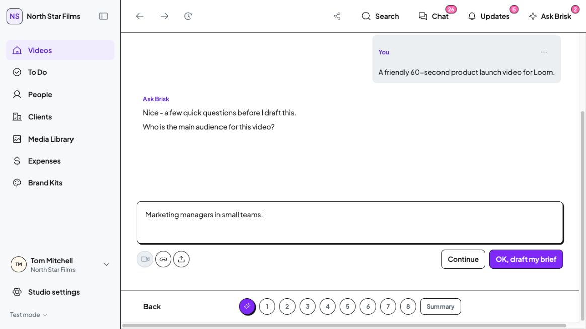
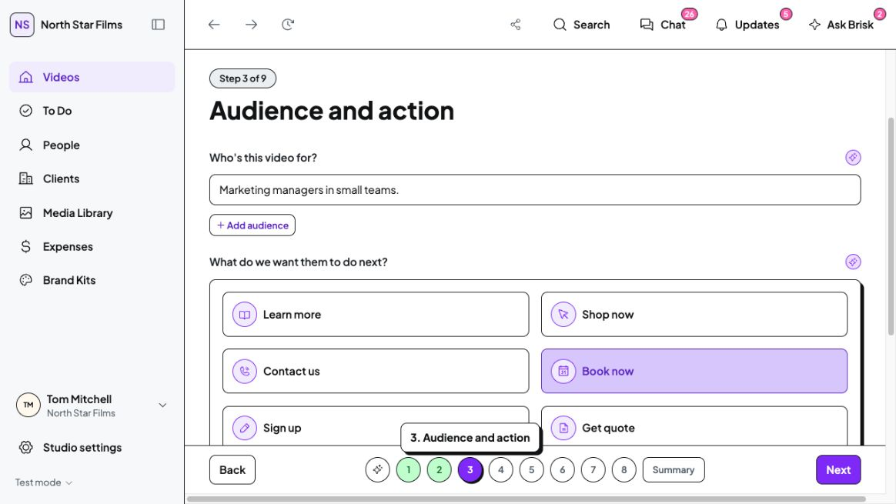
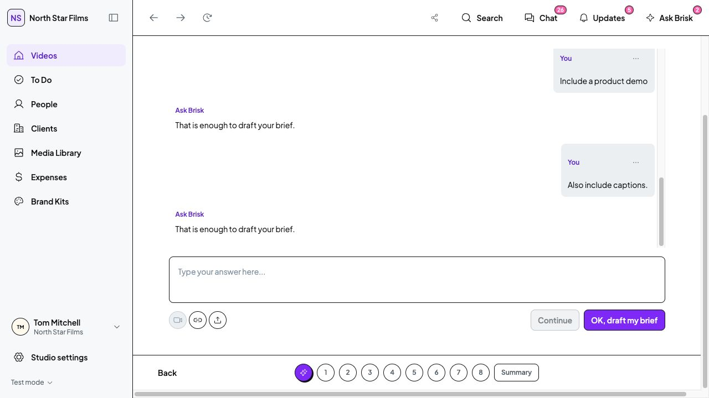

30 October 2026 · Implemented · Awaiting Tom's visual sign-off
Continue and OK, draft my brief now stay side by side. Continue sends your message. Draft uses the information supplied so far, including any answer still in the input, without requiring every clarification question first. Empty inputs cannot produce an empty draft. Existing review and approval boundaries remain.



TypeScript, Brief HTTP 200 and diff checks passed. One application file changed; no CSS, assets, dependencies or working data changed. Drafting checks used disposable local origins. No real messages, approvals, mobile pass, tests, production build or commits.